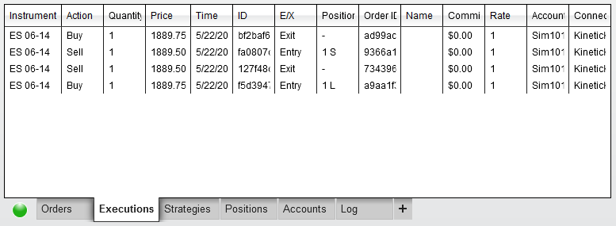
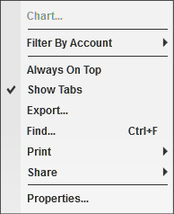
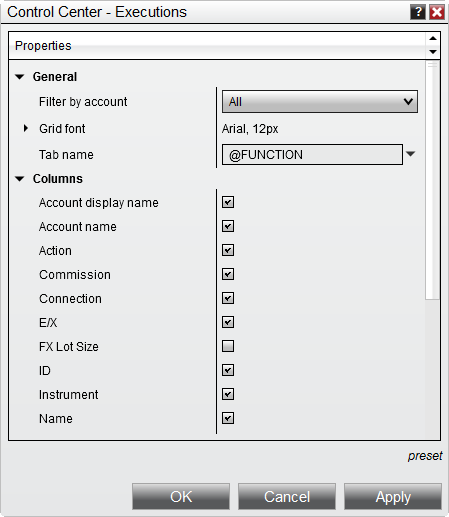

|
<< Click to Display Table of Contents >> Executions Tab |


|
Executions Tab
|
<< Click to Display Table of Contents >> Executions Tab |
|
The Executions tab displays all executions for the current day in the data grid.
 Understanding the executions tab
Understanding the executions tab
Executions Data GridThe current day's execution information will be shown in the data grid when connected to your brokerage connection. Simulated trades (into any simulation account) will appear when connected to any data feed connection.

Columns can be re-ordered and re-sized at will, and individual columns can be enabled or disabled via the Properties window accessible in the Executions grid's Right-Click menu. The following columns are displayed in the Executions grid by default:
The following additional columns can be applied through the grid's Properties window:
Right Click MenuRight mouse clicking within the executions grid opens the following menu:

Forex ExecutionsForex executions hold additional data such as Rate and Account Lot SizeRateExecutions on currency pairs that do not contain USD will try to grab a conversion rate in real-time shown in the "Rate" column from your data provider. Should a suitable USD conversion rate not be available, a rate of 1 will be used. This Rate will be used in determining the PnL in USD for the forex trade in other areas like the Account Performance tabs. The approach NinjaTrader follows is the GAIN Capital approach, but may differ from what banks do since they base their conversion rates off of the prior session's closing price of the currency pair. This means that our calculation approach may result in slightly different PnL values than the ones reported from your brokerage.
Account Lot SizeExecutions track the Account Lot Size used for the account when the execution occured. This is used for accurate Pip PnL calculations as a 1 pip gain in EURUSD for a 10,000 QTY sized mini lot trader is different then a 1 pip gain in EURUSD for a 1,000 QTY sized micro lot trader. Account Lot Size is used by NinjaTrader to normalize your Pip PnL reporting so that it is accurate to your accounts base Forex lot size. The Account Lot Size is normally provided from your broker automatically, however if the broker does not send the account lot size then the connection settings for the account in NinjaTrader will have an option for you to define the property "Forex lot size". |

Executions Tab Properties
How to set preset property defaultsOnce you have your properties set to your preference, you can left mouse click on the "preset" text located in the bottom right of the properties dialog. Selecting the option "save" will save these settings as the default settings used every time you open a new window/tab.
If you change your settings and later wish to go back to the original factory settings, you can left mouse click on the preset text and select the option to restore to return to the original factory settings - please note though that you cannot save a custom default to restore to.
|